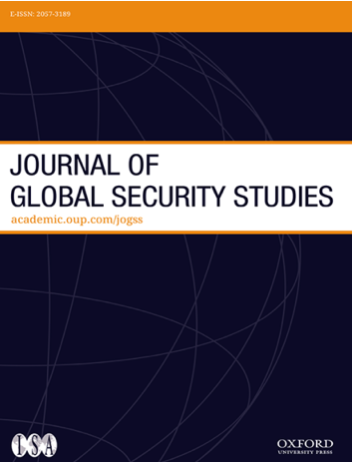
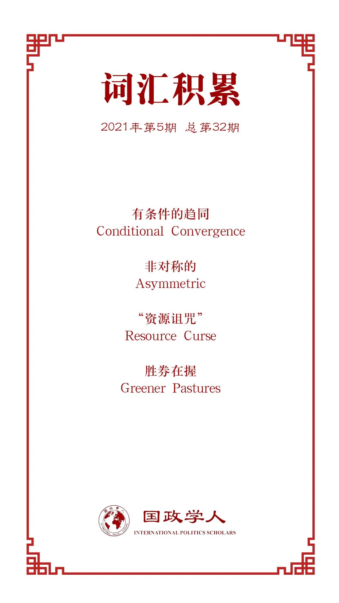

收录于合集

作品简介
【作者】 Michael Beckley，塔夫茨大学政治学助理教授，主要研究兴趣为国际安全与中美关系，曾就职于哈佛大学肯尼迪政府学院、美国国防部、兰德公司与卡内基国际和平基金会等。
【编译】 赵怡雯（国政学人编译员，山东大学国际政治与经济系）
【校对】 杨稚珉
【审核】 聂涵琳
【排版】 林祉欣
【美编】 李九阳
【来源】 Beckley Michael. Conditional Convergence and the Rise of China: A Political Economy Approach to Understanding Global Power Transitions[J]. Journal of Global Security Studies,2021,6(1).
【归档】 《国际关系前沿》2021年第5期，总第32期。
期刊简介

《全球安全研究杂志》（ The Journal of Global Security Studies ）旨在出版相关领域前沿的研究成果，为读者理解全球安全提供具有严谨性和独创性的思考，鼓励全球安全领域不同研究方向之间和跨领域之间的对话、参与和交流。
条件趋同与中国崛起：从政治经济学视角理解全球权力转移
Conditional Convergence and the Rise of China: A Political Economy Approach to Understanding Global Power Transitions
Michael Beckley
文章导读
01
简介
中美关系是影响全球安全的最重要关系之一。两国的人口共占全球人口的四分之一，经济产出共占全球的40%，军事开支共占全球的45%，研发支出和温室气体排放也共占全球近半数。如果中美不进行合作，气候、防核扩散、人权、海上交通、互联网法律等重大国际问题将无法得到解决。因此了解中美关系的动态是探索全球安全问题的前提。
许多学者简单地将中美关系描述为修昔底德陷阱，认为中国正迅速超越美国成为世界主导力量，双方注定要进行霸权竞争和战争。这种观点源于权力转移理论，即认为崛起的挑战者在经济和军事上注定将与守成霸主趋同。
然而，经济学家们已经表明趋同是一个有条件的过程：有时穷国的增长速度比富国快，而有时穷国会远远落后。因此，要确定未来几年中美是否会发生权力转移，需要明确长期经济增长的驱动因素，并根据这些因素评估两国的增长前景。
根据最近的经济学研究，本文指出有三种主要的增长驱动因素：地理、制度和人口。 美国在这些因素上得分很高，中国则存在明显弱势。因此作者认为中美权力转移不太可能；中美关系将继续以不对称竞争(非霸权竞争)为特征；未来几年，对全球安全的主要威胁将不是日益强大和自信的中国，而是一个增速放缓且与西方自由主义秩序有分歧的中国。
02
有条件的趋同
正如肯尼迪指出的，权力过渡主要是指“增长速率和技术变革差异导致全球经济平衡的变化，这种变化反过来又逐渐冲击政治和军事平衡”。问题是：为什么部分国家在某些时候积累财富的速度比其他国家快？
为回答这一问题，许多国际关系学者借用了经济学趋同理论中的一个旧观点，即穷国的增长往往快于富国。原因是穷国享有落后的优势：可以复制或窃取富国的最新技术，而无需承担发明这些技术的成本；利用更低的劳动力和投入成本进行成本创新。基于这些优势，穷国最终会从模仿转向创新，通过掌握和改进外国技术，实现价值链上的“飞跃”。与此同时，富国面临利润下降、工资上涨和资源枯竭等问题，促使投资向条件更好的新兴市场转移。
趋同理论在世界政治中的主要含义是不断崛起的挑战者注定会取代当前的霸主。 正如吉尔平所言：低成本和同等的技术使得落后社会可以在经济和军事上超过更富裕的先进社会，从而在制度中促进根本上的权力再分配。
然而，趋同理论并不是历史的铁律。这是一种有条件的假设，需注意几点不利的事实。首先，在过去20年里，富国的增长速度比穷国快，分化一直是现代经济史的主要特征。第二，贫富国家间的财富差距在过去200年稳步扩大。自2000年以来，富国和穷国在人均国内生产总值(GDP)比率上的差距略有缩小，但仍与上世纪70年代的差距相当。第三，欠发达国家的经济发展轨迹千差万别：少数国家迅速与发达国家趋同，其他国家则远远落后，大多数国家都有起飞、停滞和俯冲的混合经历。
总之，趋同绝非自动发生的。超级大国不会注定衰落，发展中国家也不会注定崛起。 落后国家存在优势的同时也有相当大的劣势，包括缺乏资本、熟练工人、技术、市场份额和品牌效应。在安全领域劣势可能更加明显，有学者发现，经济低迷对军事衰落的影响远大于经济好转对军事扩张的影响。
因此，趋同理论是不明确的。追赶式增长的可能性取决于一系列尚未被纳入权力转移理论的因素。下文将重点介绍三个最重要的因素。
03
经济增长的决定因素
根据大量的经济学文献， 推动长期经济增长，决定未来几十年经济增长可能性的三个主要因素是地理、政治制度和人口。
地理
位置问题在国际政治中十分重要。创造财富的理想地点是拥有丰富可开发的能源资源、交通基础设施和保护性缓冲的地方。
1、可利用的能源资源
大量证据表明了财富与可开发能源资源存在关联。能源储量排名前五的国家中仅有6%的国家处于贫困状态，而在能源收入最低的两类国家中，58%的国家是穷国。此外，资源在大国崛起中发挥了重要作用。例如，英国在19世纪早期领先于其他国家，部分是由于其主要城市位于大量的煤矿附近，加之机器的广泛应用打破了交通和工业的限制。
有时大量资源的存在会助长腐败滋生、破坏法治或者增加内战爆发的可能性，从而阻碍经济增长，但这并非一定发生。例如挪威作为主要的石油生产国，在治理和经济表现方面位居国际前列。关于这一问题，有研究发现资源财富实际上可能促进民主发展，只要一个国家拥有多元化的经济，巩固的民主政治机构，或两者兼得，资源就会推动增长。
2、交通基础设施
陆上货物运输比水上货物运输要贵40至70倍。拥有通航河流和天然港口的国家节省了大量修建与维护公路铁路的资金。有通航河流和海洋港口的国家也更有可能参与世界贸易，形成庞大而多样化的消费市场。
水路和财富之间的关联是惊人的。世界上最繁荣的四个经济区——西欧、东北亚(中国沿海、日本和韩国)以及美国和加拿大的东西海岸拥有世界上大部分天然港口和通航河流。相比之下，大多数干旱内陆国家都很贫穷。这种模式在国家内部也同样适用，大多数国家最繁荣的地区往往位于水路附近。
3、保护缓冲
一个好的地理位置必须是安全的。被强大敌人包围的国家往往需要做好进行更多战争的准备，这种军事化举措既消耗资源又不利于吸引投资。拥有天然地理环境（如水域、山脉或弱小国家）作为缓冲地带的国家，能够与强大的竞争对手保持距离。这些国家不仅吸引投资，还因拥有银行的信任而获取更低廉的融资。最理想的缓冲区是一片水域，既能在战时提供保护，又能在和平时期促进贸易。
政府机构
经济体的繁荣需要廉洁且有能力的政治机构进行管理。理想的政府是强大且负责任的，有能力执行法律和提供服务，同时能为社会谋利而受到约束。
1、能力
跨国和地区研究表明，人均税收（国家能力的粗略代表）更高和国际能力指数得分更高的国家和地区往往更加富有。
2、负责任程度
独裁政权或许能够在早期发展阶段实现增长目标，但从长远来看，制约行政权力对维持经济增长至关重要。这种制约不仅减少了腐败，而且有助于保护私有财产权，产权反过来促进了创业和创新。因为人们相信劳动成果将受到国家的保护和尊重，就更有可能开展新业务并从事研发活动。机构问责制与财富之间存在明显的相关性：对高层管理人员约束最大、私人投资者被征用风险最低、治理指数得分最高的国家，几乎都是世界上最富有的国家。研究表明，负责任的机构能极大地改善一个国家维持长期经济增长的前景。
人口
数量多、年轻化且受教育程度高的人口是国家经济增长的前提准备之一。
1、规模
人口激增往往能刺激经济增长。例如19世纪后期，德国通过几个州的统一，美国通过移民都实现了人口激增，这是两国实现快速发展的原因之一。
2、年龄
没有生产力的庞大人口可能成为负担。大量证据表明所谓的人口红利(即劳动年龄人口的增长快于退休人口的增长)与经济增长有关。例如，中国和印度在九十年代和二十一世纪头十年的增长，大约有三分之一都归功于人口红利。相比之下，劳动力人口不断下降的国家几乎不可能维持经济增长。平均一个国家的人口增长率每下降1个百分点，该国的GDP增长率便会减少1个百分点。
3、受教育程度
受教育程度同样影响人口的生产力。研究表明，不同国家和地区的人均财富差异中的20%到35%是由教育程度和教育质量的差异造成的。历史研究表明，19世纪晚期的德国和20世纪的美国教育系统的扩张，都为两国GDP增长每年贡献了约三分之一。
04
中美两国增长前景的比较
在明确经济长期增长的主要驱动力后，作者运用这些指标来评估中美未来经济增长前景。
地理
1、可开发能源
美国的石油和天然气数量是中国的三倍，煤炭是中国的两倍。美国是世界上最大的能源生产国,并将在2025年左右成为能源净出口国。而中国是世界上最大的能源净进口国,未来十年80%的石油和45%的天然气将依靠进口。
2、交通基础设施
美国的通航河流长度长于世界其他国家之和，约为中国的7倍。该水路网络每年为美国节省了数千亿美元的基础设施成本，并构成了一个庞大的全国市场。生活在任何地方的美国人几乎都可以享受由其他地区生产的商品，而无需支付高昂的运输费用。美国拥有的天然深水港口也多于其他国家之和。纽约港、莫比尔湾等13个世界级的深水港区使美国能够利用其在欧洲和亚洲两个重要贸易区之间的独特地理位置，当一个地区陷入衰退时，美国可以将贸易和投资转移到另一个地区。一个简单的事实说明了这种摇摆能力的优势：二战后欧洲或亚洲的衰退不会导致美国的衰退，而每次美国的衰退都会引发欧洲和亚洲的衰退。
3、保护缓冲区
美国与两个弱小的盟友——加拿大和墨西哥接壤，而中国则被竞争者包围。中国与19个国家拥有共同的海陆空边界，其中5个国家在上个世纪曾与中国发生过战争，其中10个国家仍然声称对中国的部分领土拥有主权。
政府机构
在最常用于衡量政府能力和负责任程度的世界银行列举的6项全球治理指标中，美国政府的排名均高于中国。
1、能力
根据世界银行的数据，美国通过各种国家能力指标（例如政府效力、监管质量、法治程度）的评估在所有国家中排在第90个百分位（前10%），而中国排在第40个百分位。但相较于其他发达民主国家，美国存在一定弱势。美国总统制比其他发达民主国家常见的议会制拥有更多的否决权，税收收入在经济合作与发展组织(OECD)中排名第三，政府为其公民提供的服务更少。生活在贫困中的美国人的比例比西欧和日本高出60%。
2、责任制度
根据世界银行的数据，就话语权和问责制而言，美国政府排在第84个百分位，而中国排在第7个百分位。
人口
1、人口规模
目前中国适龄劳动人口是美国的四倍。然而，本世纪美国适龄劳动力人口预计将增加4000万，而中国将减少现有劳动力的一半——4.7亿。
2、人口年龄
未来几十年内美国的年龄中值将保持稳定，而中国的年龄中值将在本世纪中叶从现在的35岁上升到50岁。与此同时，预计到2050年，中国65岁以上的老年人口将从大约1.3亿增加到4.1亿，这将超过美国总人口数。当前中国每8个工人供养1个退休人员，到2050年则变成每2个工人供养一个退休人员。相比之下，据预测未来美国将会由每3个工人供养1个退休人员。
3、受教育程度
美国人均接受教育的年限是中国公民的两倍。美国的公立学校到高中都是免费的，而中国义务教育仅包括小学和初中。因此76%的中国劳动适龄人口没有完成高中教育。中国面临的的更复杂的人才问题是每年有40万受过高等教育的公民流失到国外，其中包括数万名科学家和工程师，以及约六千名发明家（至少注册一项专利的人）。中国“人才外流”问题的总规模尚不得而知，但美国政府的数据显示，仅美国一年就吸收3500名中国科学家和工程师。
05
结论
当前均势趋势的传统观念很大程度上依赖于权力转移理论，该理论认为经济上的趋同是一个无条件的过程，穷国不可避免地会追赶富国。然而，经济学家已经表明，趋同是罕见的，而且是以一系列地理、制度和人口因素为条件的。但这些因素至今未被纳入国际变化的主要理论中。作者在本文中根据这些因素分析了美国和中国经济的增长前景，分析结果则对中国是否以超级大国身份与美国展开竞争提出疑问。
从好的一面看，世界短期内经历全面霸权竞争的可能性较小。这对全球安全来说是一个非同寻常的发展。如今美国没有面临与之匹敌的竞争对手，而世界，尽管远非完美，却比以往任何时候都更加和平与繁荣。
坏的一面是，历史表明，当一个崛起大国达到顶峰，在其野心尚未实现之前就开始衰落时，其人民往往会变得不满，其领导人通常会镇压国内并妖魔化外国对手。例如，自本世纪头十年世界油价的变动影响了俄罗斯经济后，俄罗斯变得更加敏感。
作者提出要避免这种命运，需要其他国家特别是美国，以安抚和威慑相结合的方式来对待中国。不幸的是，认为中国是一个新兴超级大国的普遍观点已经导致美国放弃接触，转而支持无节制的竞争。仅在过去的几年里,美国给中国贴上了竞争对手的标签。对中国商品征收高额关税，严格限制中国投资和移民，让美国军队介入东亚领土争端，并制定了在战争发生时迅速打击中国的计划。这种竞争不仅增加了中美冲突的风险，还对全球安全构成了威胁，因为它削弱了世界贸易组织的威信，并从实际上扼杀了《巴黎气候协定》和《中程核力量条约》。
因此， 全球安全面临的主要威胁不是由经济趋同推动的中美权力转移，而是中美两国对权力均衡的长期趋势看法的分歧。 中国目前经济增速放缓的趋势没有改变，美国可以注意到这一点，并相应地调整美国的政策。
译者评述
本文作者提出了判断大国间是否会发生权力转移的重要因素，即两方的政治经济发展潜力。在对地理、政治、人口三种主要驱动力进行分析后，作者对中美政治经济现状进行概述，并对未来发展前景进行预测。最终作者得出中国的发展潜力不足以支撑与美国进行霸权竞争的结论。作者承认美国“认为中国是一个试图挑战霸权的超级大国”这一惯性思维使得美国难以正视现状并适时调整应对政策。美国应对中国实力增长而产生的焦虑是提高中美陷入霸权竞争可能性的重要推动力。这正是本文给予中美关系的一大重要提示，即未来中美双方的持续对话合作应建立在对双方实力变化取得共识的基础之上。
若将作者的见解通过新自由制度主义视角分析，既然中国实力未能达到成为美国威胁的程度，那么中国选择不挑战现存国际秩序的可能性自然会增加。且不论中国通过现有秩序获得了发展机遇，同时也投入了大量的“沉没成本”。因此权力转移的可能性的降低或许意味着其他更加和平合作可能的浮现。
本文对中国发展潜力进行判断的数据有待考证。以作者运用的中美两国在世界银行“世界治理指数”中的排名来进行比较分析为例，该指数本身存在强烈的精英评判色彩、简单以西方精英阶层的价值观衡量世界各国的标尺、数据来源半透明化半公开化、划分测量区域过于僵硬等诸多缺陷。且作者有意无意避免提及中国存在优势的方面，未能做到完全客观分析。自然，无法支撑作者提出的中国将因无法满足欲望而收紧国内并影响世界和平的结论。
词汇整理

文章观点不代表本平台观点，本平台评译分享的文章均出于专业学习之用, 不以任何盈利为目的，内容主要呈现对原文的介绍，原文内容请通过各高校购买的数据库自行下载。
国政学人
支持学术公益与知识传播
微信扫一扫赞赏作者 __赞赏
已喜欢，对作者说句悄悄话
取消 __
发送给作者
发送
最多40字，当前共字
上一页 1/3 下一页
长按二维码向我转账
支持学术公益与知识传播
受苹果公司新规定影响，微信 iOS 版的赞赏功能被关闭，可通过二维码转账支持公众号。